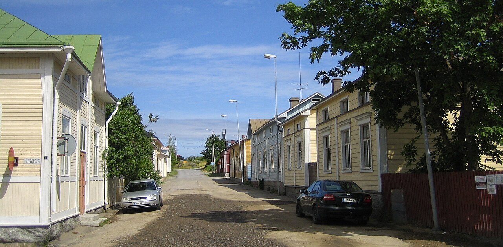
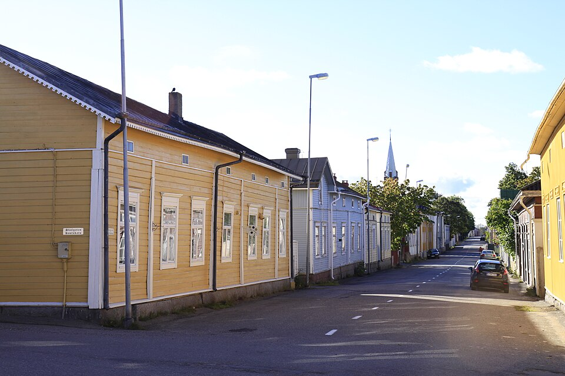
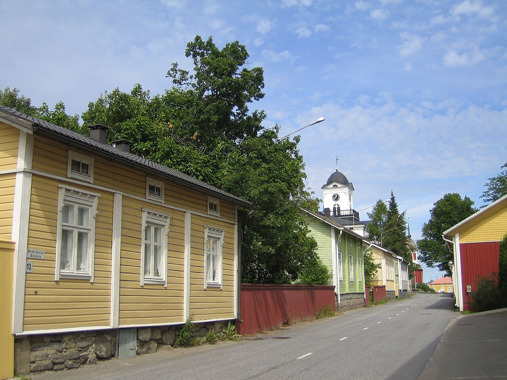

Puutarhat ja pihat
Kiveytyksiä, kukkaloistoa, yksityiskohtia ja tarinoita — jokainen kohde on omanlaisensa.

Kesäkuussa · Kristiinankaupungin keskusta
Avoimet portit on kulttuuritapahtuma pihoissa ja puutarhoissa: vieraanvaraiset pihat, joita ei arjessa näe, kutsuvat tutustumaan vanhan puutalokaupungin elämään ja kesäkuun kukkaloistoon.
Päivämäärät ja ohjelma vahvistetaan keväällä — seuraa virallisia kanavia.

Tapahtuman järjestää Avoimet Portit -työryhmä yhteistyössä pihanomistajien, yhdistysten, yrittäjien ja taiteilijoiden sekä kaupungin palvelualueiden kanssa.
Kesäkuussa osa keskustan talon omistajista avaa porttinsa: pääset ihailemaan idyllisiä pihoja ja puutarhoja, joita muuten ihaillaan vain aidan yli. Jotkut isännät ja emännät tarjoavat myös kurkistuksen sisätiloihin.
Kristiinankaupunki on yksi Suomen parhaiten säilyneistä puukaupungeista ja Cittaslow-yhteisön jäsen — täydellinen näyttämö hitaalle, aistilliselle kaupunkilomalle.
Kiveytyksiä, kukkaloistoa, yksityiskohtia ja tarinoita — jokainen kohde on omanlaisensa.
Näyttelyitä, yhteisöllistä ohjelmaa ja elämyksiä, jotka tuovat esiin sekä puutarhaa että rakennusperintöä.
Tapahtuman yhteyteen kannattaa yhdistää museo- ja galleriakäyntejä — kysy päivitettyjä vinkkejä infosta.
Aitoja näkymiä vanhasta puutalokaupungista — sama miljö, jossa Avoimet portit -tapahtuma järjestetään.


Kuvat: Wikimedia Commons (lisenssit alla). Korvaa tarvittaessa asiakkaan omilla valokuvilla.
Tapahtuma levittäytyy kävelymatkan päähän matkailuinfosta ja vanhan kaupungin ruutukaava-alueesta. Tarkat kohteet julkaistaan virallisilla sivuilla lähempänä tapahtumaa.
Avaa suurempi kartta (OpenStreetMap) Kartta © OpenStreetMapin tekijät
Hinnat ja rannekkeet vahvistetaan tapahtuman virallisilla sivuilla.
Tarkista vierailukohteet, kartta ja mahdolliset uudet kohteet Visit Kristinestadin ja tapahtuman Facebook-sivuilta ennen matkaa.
Kristiinankaupungin tapahtumakalenterissa on ajantasaiset kellonajat ja yhteystiedot matkailuun.
Avoimet Portit -työryhmä ja Kristiinankaupungin matkailu
Kristiinankaupungin matkailu
Sjögatan 49 / Merikatu 49
64100 Kristiinankaupunki